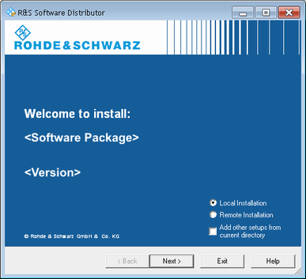

The "R&S Software Distributor" is opened when an R&S CMW setup file is started.

The software distributor can initiate a local or a remote installation.
Select "Local Installation" if you start your setup file from the R&S CMW system drive or from a connected storage medium, for example a USB memory stick.
Select "Remote Installation" if your setup files are on a network folder in the LAN.
A remote installation allows you to update several instruments simultaneously.
If you want to install packages contained in several setup files, proceed as follows:
Store all setup files in the same directory.
Start one setup file.
In the "R&S Software Distributor" dialog, enable "Add other setups from current directory".
As a result, the packages of all setup files in the same directory are offered for installation when you press "Next".
The installation process itself is self-explanatory. For additional information, especially concerning the options for remote installation, refer to the online-help of the software distributor.